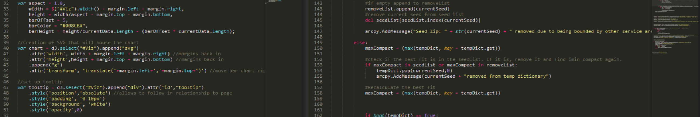
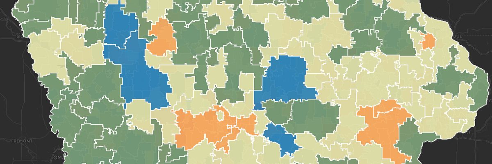
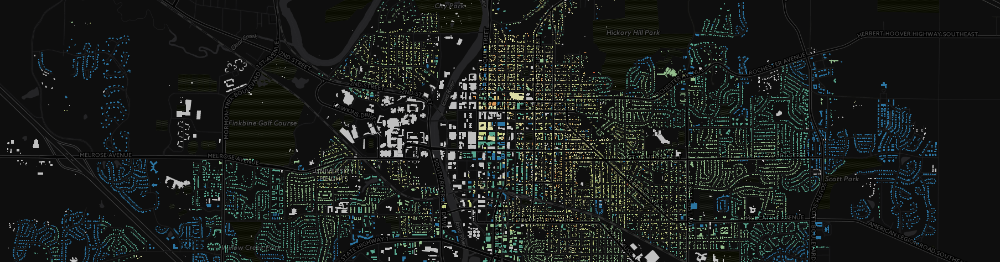
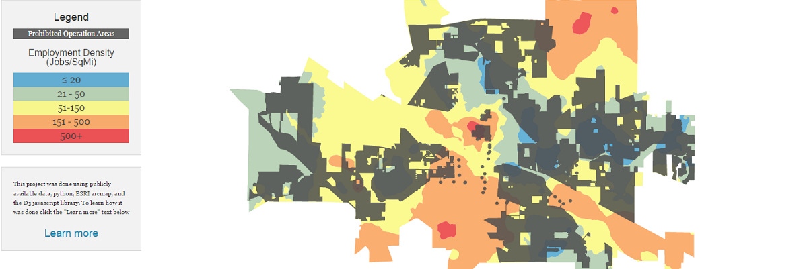

Menu
Home
Projects
Iowa City Food Trucks
Dental Service Areas
A Year in the Cage
Age of Johnson County Buildings
Blog
Resume

GIS/Geography

Creating dental service areas.

Age of Iowa City Buildings

Iowa City Food Truck Analysis
Spare Time
A Year in the Cage!